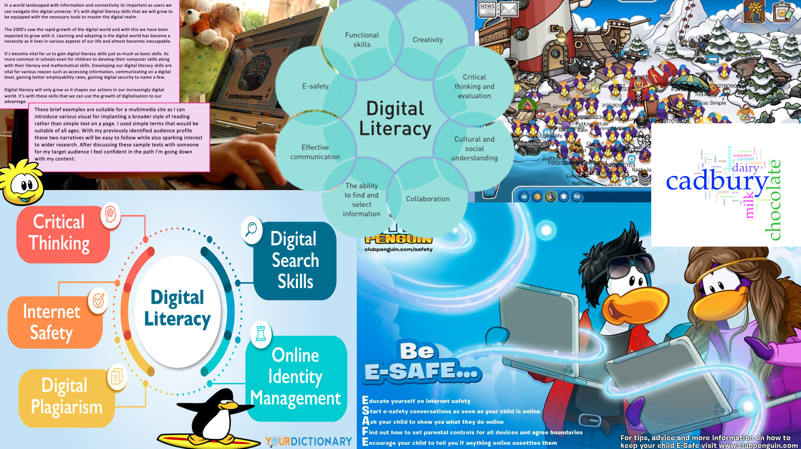

Reviewing professional writing characteristics. I plan on revisiting these to evaluate my final website to look for areas of improvement as well as identifying strengths on my site.
Chosen website: Cadbury’s Homepage. https://www.cadbury.co.uk/
ACCURACY
Due to the high profile of the Cadbury brand and its place in such a competitive market the website shows no sign of inaccuracies making it appear professional and well looked after. The webpage is the home for the first point of contact for customers and the company. Their consistently styled and accurate website also represents a positive image for the brand.
ACTIVE VOICE
Due to the professionalism of the website an active voice is present with the need to inform more than describe.
LIMIT BIASES
The website avoids nay sort of bias as it attempts to have a wide target audience. The site offers an inclusive design with educational information and interactive shopping suitable for any of age to access a device.
CLARITY
Cadbury’s website uses a lot of descriptive words to make the reader inrun also feel positive. The site is also very interactive with a lot of opportunity for collaboration with Cadbury as they make the site very customer based rather that company.
CONCISENESS
The webpage holds concise and well styled text boxes of information. There is no lengthy paragraphs that would lose interest for readers. Information is also easy to find and well-structured for easy navigation.
CONVERSATIONAL AND SMOOTHLY FLOWING PROSE
The language on the website I simple and direct with simply constructed sentences and fun descriptive language used for describing various offers available to customers currently. To avoid putting off customers with overcomplicated language and unrecognisable jargon the site opts for a more accessible and appropriate tone with smoothly flowing sentences.
CORRECTNESS
Due to the high professionalism and importance the site carries for Cadbury’s the site possesses no poor grammar or incorrect use of words.
PARALLELISM
The site uses various examples of parallelism and use of language to create attractive and inviting portions of text e.g., discover how Cadbury became the glass and a half; company, and hear about the journey from a grocery shop in Birmingham to the Cadbury we know today. This storytelling type of language is sued frequently on the site as an act of inviting customers to visit different pages on the site.
POSITIVE VOICE
The whole website is full of positive words and affirmations. The company of Cadbury’s want their customers to feel positive when reading heir site and so the voice used on the site needs to communicate this. Even the pictures on the site are all inclusive of people with massive smiles on their faces again to convey this happy attitude.
STRONG NOUNS AND VERBS
Surprisingly Cadbury used more nouns and verbs with their homage, it’s not till you begin to navigate the site on a deeper level that you begin to see the expected descriptive words e.g. delicious, smooth, rich. They are specific with their verbs as they aim to to get to the point with their text.
SENTENCE VARIETY
There is a high variety of sentences on the websites home page. They grow longer as you scroll further down the page. Interestingly no sentence begins with the same word on their homepage making each section of text inviting and non repetitive.
SIMPLE WORDS
The sites use loads of simplified wording to allow their page to be more accessible for readers. There’s no use of over complicated words or phrases making the page welcoming to all.
SHORTER PARAGRPAHS
All web paragraphs we between 6-8 lines, avoiding any need for long reading times and opportunities to lose the interest of readers of the site. The website can be more easily skimmed for information making it much more suer friendly while also having more of a visual appeal as less text makes room for more use of imagery for design.
TONE AND VOICE
The overall tone is friendly and inviting for customers. There is fun in the writing and the overall tone is positive with use of punctuation marks ton add excitement o the text.
DEFINE AUDIENCE
So far throughout the tasks iv carried out in the labs and independent learning I feel like I’ve stayed consistent with my target audience. Those visit my web page will have in initial interest in either digital literacy or Club Penguin and my hope is that when they leave they can leave with knowledge on both topics with useful links between digital literacy and online games.
DEFINE PURPOSE
The site will inform readers on digital literacy and its importance for being produced at a young age and should bring a sense of relatability to readers on how they may have possibly encountered and developed their own digital literacy skills in their younger years on different games with club penguin as an example.
CONDCUT RESEARCH
After researching the topic, itself of digital literacy iv found it really interesting how vital the skills are to me now and how young I started to develop these skills. Iv also enjoyed revisiting a large part of my childhood when looking into how Club Penguin aided the learning of these skills. There is a huge area of research into digital literacy in education and I’m excited to deepen my knowledge as the term goes on.
ORGANISE, CATEGORISE & OUTLINE
Laying my information out so far in the index page has been really useful in organising my task work and navigating my project work. Using the excel sheet provided in the template has also been useful in organising my references for any multimedia used so far in my work.
Voyant offered an interesting look at words that appeared often on the site. The visualising of these word provide an interesting graphic seen below.
The tool has however wrongfully picked up some words such a non active, 5pk and fc. Overall, it seems a useful; tool and one I may consider using with my final project, I just need to be aware of final visuals produced.
1.What is digital literacy
In a world landscaped with information and connectivity its important as users we can navigate this digital universe. It’s with digital literacy skills that we will grow to be equipped with the necessary tools to master the digital realm. The 2000’s saw the rapid growth of the digital world and with this we have been expected to grow with it. Learning and adapting is the digital world has become a necessity as it lives in various aspects of our life and almost becomes inescapable. It’s become vital for us to gain digital literacy skills just as much as basic skills. Its more common in schools even for children to develop their computer skills along with their literacy and mathematical skills. Developing our digital literacy skills are vital for various reason such as accessing information, communicating on a digital level, gaining better employability rates, gaining digital security to name a few. Digital literacy will only grow as it shapes our actions in our increasingly digital world. It’s with these skills that we can use the growth of digitalisation to our advantage.
These brief examples are suitable for a multimedia site as I can introduce various visual for implanting a broader style of reading rather than simple text on a page. I used simple terms that would be suitable of all ages. With my previously identified audience profile these two narratives will be easy to follow while also sparking interest to wider research. After discussing these sample texts with someone for my target audience I feel confident in the path I’m going down with my content./p>
My updated moodboard.
